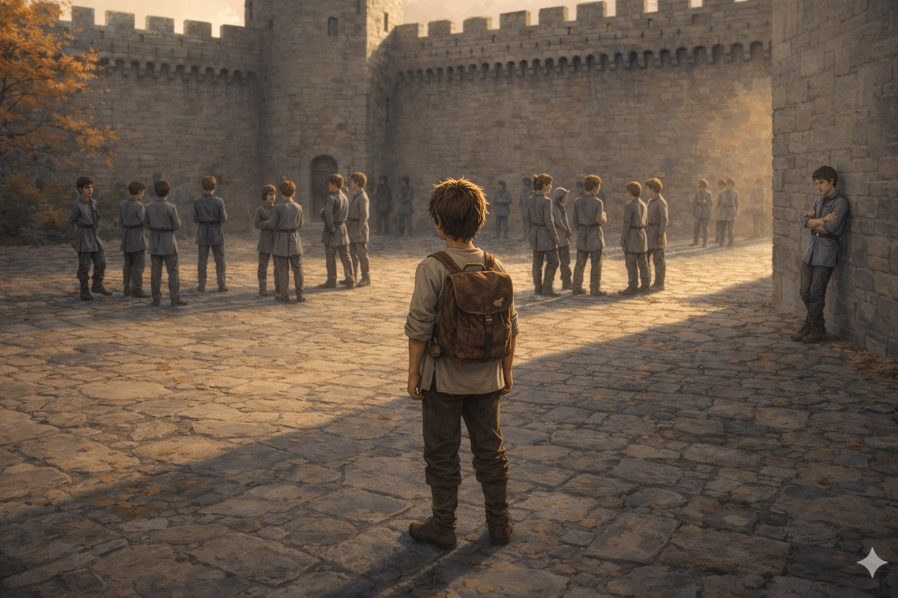
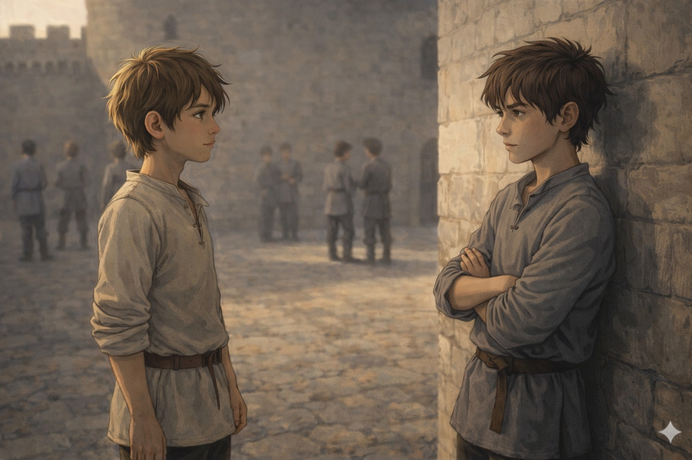
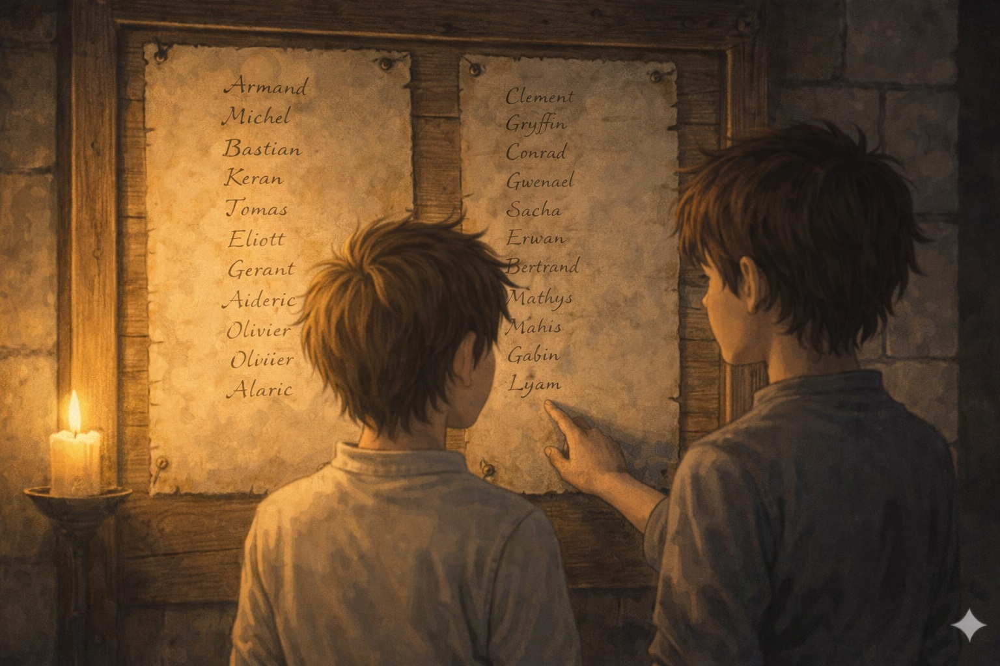
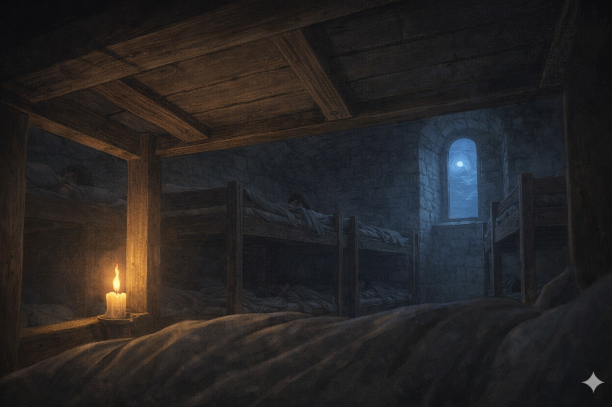

La charrette de Basile s'est éloignée depuis une heure. Tu as ton sac sur le dos — le même que ta mère a cousu et recousu — et tu es au milieu de la cour d'armes de Valdurne.
Les autres pages se regroupent. Pas par ordre alphabétique, pas par région d'origine. Ils se regroupent par quelque chose que tu ne comprends pas encore — une connivence de vêtements, d'accent, de façon de tenir les épaules.
Le Maître Renauld vient de terminer l'appel. Il t'a appelé par ton prénom suivi du métier de ton père. Lyam, fils du forgeron. Pas comme les autres.
Et là, appuyé contre la muraille du fond, les bras croisés — un garçon seul. Vêtements propres mais sans ornement. Il attend quelque chose, ou personne.

Tu t'approches. Il s'appelle Kern. Fils d'un marchand de bois. Il te regarde sans bouger — pas de méfiance, pas d'enthousiasme non plus. Juste une attention tranquille.
Il n'a pas l'air d'être du genre à avoir besoin d'encouragements. Ni du genre à en donner. Mais il est là, seul, et tu as choisi de traverser la cour.
"Ils se regroupent vite."
C'est tout ce qu'il dit. Ce n'est ni une accusation ni une invitation — c'est une observation. Il attend ta réponse.

Plus tard, Kern t'explique ce que tu avais commencé à comprendre. Il y a deux listes à Valdurne. La première : les admis par lignage ou par titre. La seconde : les admis par aptitude démontrée.
Même formation. Mêmes cours. Mêmes dortoirs. Mais une encre différente sur le registre. Et le Maître Renauld qui sait laquelle lire à voix haute.
Tu restes silencieux un moment. La cour s'est vidée. Deux groupes d'élèves rient près du puits. Ils ne regardent pas dans ta direction.
Kern attend ta réaction. Pas de la pitié — de la curiosité, sur ce que tu vas faire de cette information.

Le dortoir du nord. Six lits en bois superposés. Une fenêtre si étroite qu'elle semble avoir honte d'elle-même.
Kern est dans le lit au-dessus. Ses pas dans l'escalier, sa façon de se tourner dans le silence — tu as déjà appris quelque chose sur lui aujourd'hui. Pas son histoire. Juste sa façon d'être dans un endroit inconnu.
Tu éteinds ta bougie en dernier.
Demain, tout recommence. Et tu seras encore sur la deuxième liste.